ESF: harmonizing heterogeneous EEG acquisition for pretrained classifiers preprint v2, September 2026
A pretrained EEG classifier is built on recordings from one setup and then used on recorders that sample, amplify, reference and filter differently. The paper asks a narrow question: if every recording is first passed through one fixed preprocessing contract (the Encephlian Standard Format, six standard steps in a fixed order), which of those differences stop mattering, for which model, and at what cost? Five recorder differences are simulated on raw microvolt TUAB recordings and three frozen public models (EEGPT, LaBraM, BIOT) are scored with the contract complete and with the one step that addresses each difference switched off.
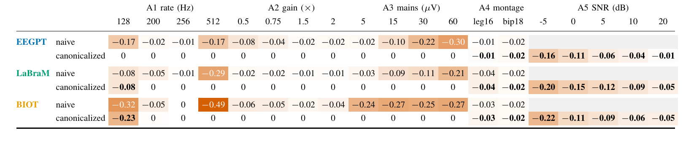
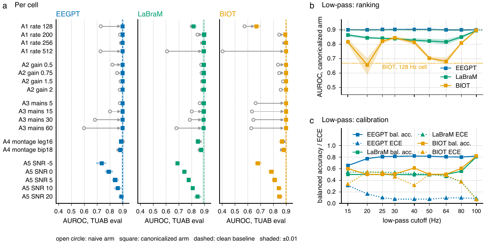
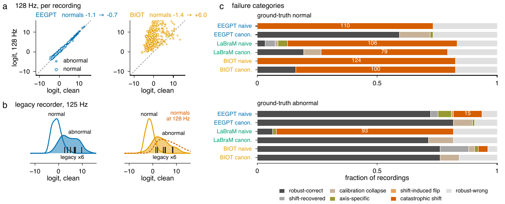
- Theory. Differences the contract can invert exactly (gain, mains) are undone for any model; whether a low sampling rate can be undone depends on the frequency band the model relies on, which the low-pass sweep measures directly.
- Rigour. Probes trained on the TUAB train split only, patient-disjoint evaluation; three seeds and a linear probe per model; DeLong tests with FDR control; permuted-label and outlyingness controls; a label-free monitor shown not to work.
- Correction. Version 1 was submitted to IEEE SPMB 2026 and withdrawn by me after I found that its operators were applied downstream of the contract and its probe overlapped the evaluation set. Version 2 reruns everything upstream, on three models, and records the correction in a version note.
Evidence. Code, all twelve probes and every per-recording prediction are public; every table and figure regenerates from them on a CPU.
Persistent activity and memory load in human single neurons during a Sternberg task
Do neurons in the human medial temporal and medial frontal lobe fire persistently while items are held in working memory, and does that firing scale with the number of items held? I re-implemented the laboratory's published selectivity tests in Python and added a memory-load analysis.
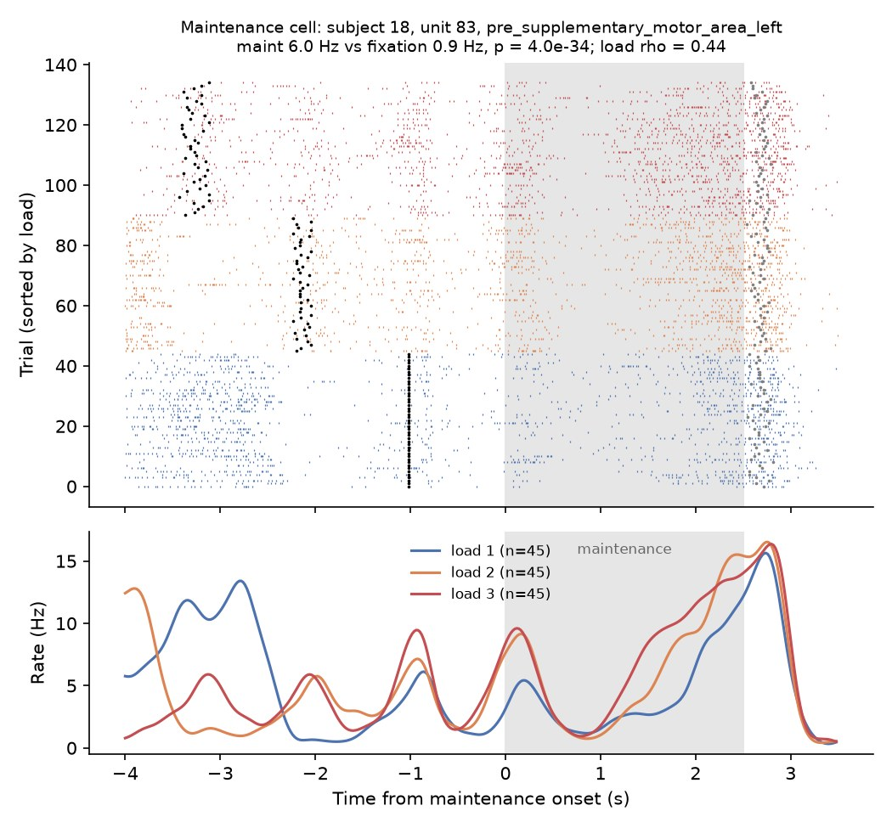
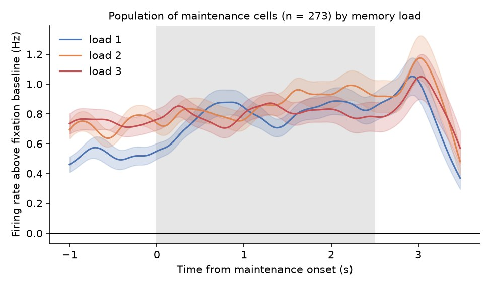
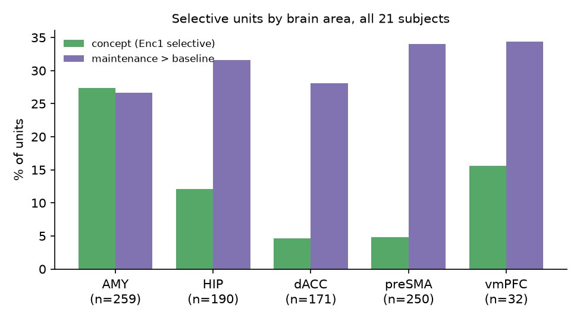
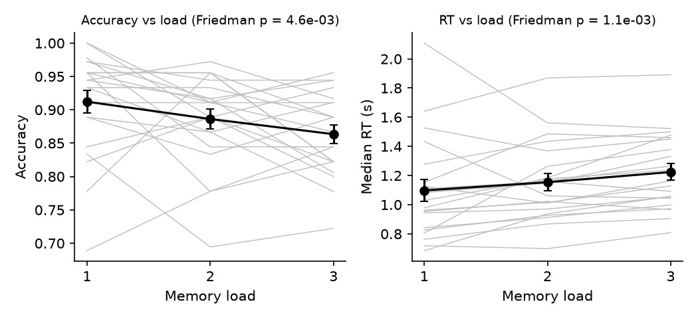
- Method. Concept cells: ANOVA across image identity in the 0.2–1.0 s window after the first encoding image, then preferred-image contrast. Maintenance cells: paired one-tailed test of the 2.5 s maintenance rate against the 0.5 s fixation baseline, repeated on non-preferred trials for concept cells. Load: per-cell Spearman correlation and a population Wilcoxon test.
- Result. 119 concept cells (13%) and 273 maintenance cells (30%), consistent with Kamiński et al. 2017. Only 8% of maintenance cells increase significantly with load and 10% decrease; load 3 versus load 1, Wilcoxon p = 0.67. A rate code alone does not carry load, which is the gap the laboratory's phase-of-firing account (Kamiński et al. 2020) fills, and the question that motivates closed-loop TMS–EEG work on prefrontal theta.
Evidence. Only trial tables and spike times were read; no data were synthesised. Extraction and analysis scripts, per-unit results and figures: github.com/h5371h/sternberg-wm-000469.
Memory-selective and visually selective neurons in the human medial temporal lobe
Single neurons recorded from hippocampus and amygdala in 59 epilepsy patients during an old/new recognition memory task, 89 sessions in NWB. We adapted the laboratory's release pipeline to extract spike times, cluster identities and trial structure, produced per-neuron rasters and PSTHs, and classified each unit with a one-way ANOVA across image categories (visual selectivity) and a bootstrap test on new versus old trials (memory selectivity).
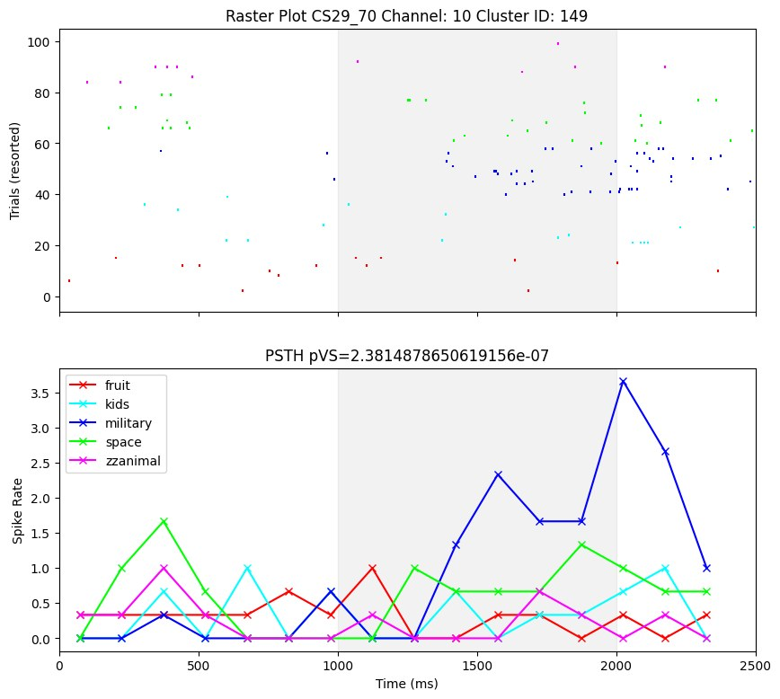
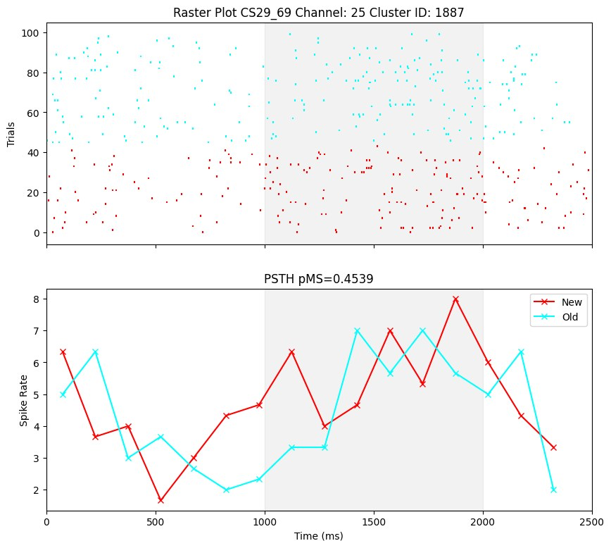
Why it matters here. Same laboratory, same NWB conventions and the same pipeline family as the working memory analysis above; this project is where that pipeline was first learned.
Neuropixels recordings from human cortex: LFP and spiking under anaesthesia
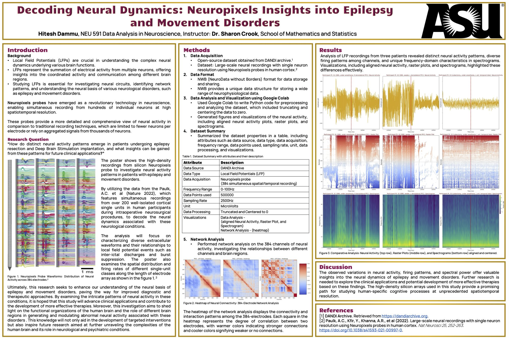
Non-human primate array electrophysiology: spike sorting, movement-locked firing, LFP tuning
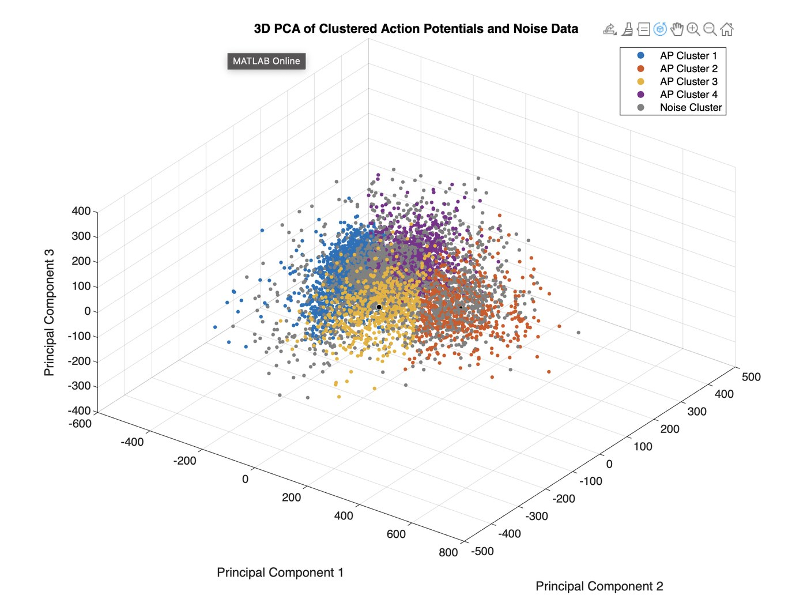
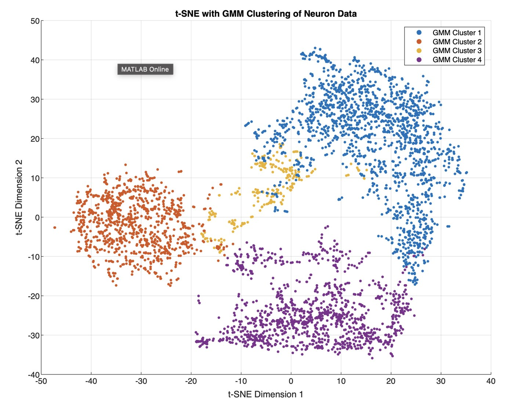
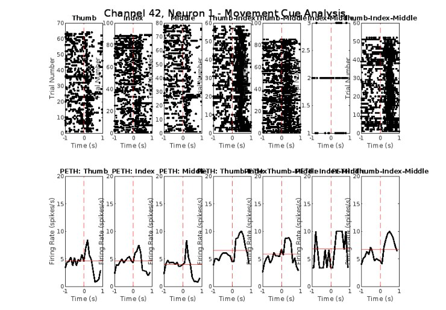
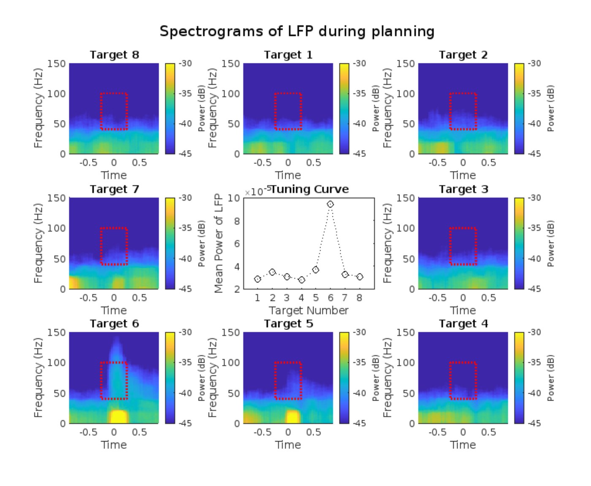
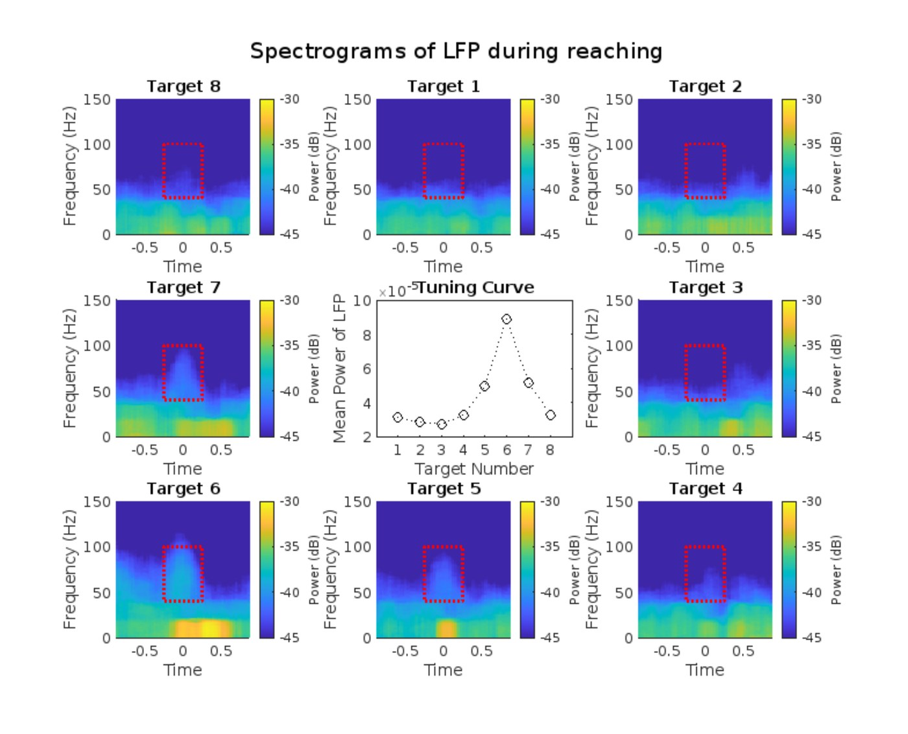
Pilot study with Barrow Neurological Institute (2023, unpublished)
Delta-band micro-ECoG dynamics during speech
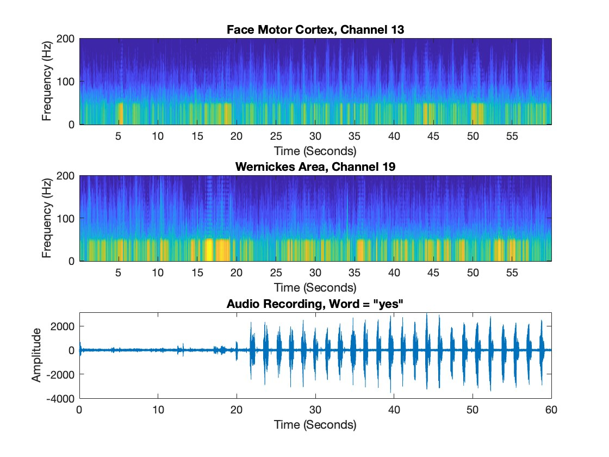
Asked whether low-frequency (1–4 Hz) activity in temporal cortex tracks speech structure at syllabic timescales. Processed raw micro-ECoG, computed multitaper spectral dynamics with Chronux, aligned phoneme boundaries from transcripts to delta-band peaks, and explored phoneme classification from the same electrodes. Produced a working path from raw cortical potentials to speech-aligned spectral features; no paper resulted.
Clinical EEG signal pipeline (January 2025 – present)
Clinical EEG is siloed: recordings sit inside vendor-locked databases behind proprietary formats, on acquisition systems that have barely changed in twenty years. Most of the practical work of EEG machine learning is therefore getting recordings out and into one representation a model can trust. This is the pipeline I built and the field work behind it.
- Readers and a converter. Native Natus, Cadwell, Nihon Kohden, Persyst, Nicolet, BrainVision and EDF/BDF exports are read into one canonical representation (19-channel 10–20, 250 Hz, average reference, channel-wise robust z-score).
- On-site data collection. Acquisition setup, montage and electrode checks and session QC with staff at three partner clinics, on legacy recorders. Each clinic's retrospective archive (weakly labelled, over 400 GB, vendor-locked) fixed the specification of the canonical format.
- Public corpus. The seven Temple University Hospital EEG subcorpora, 84,552 recordings, converted into the same representation for training and evaluation.
- Measurement. Which acquisition differences the representation undoes, for three frozen public models: the preprint above.
- Models. An interictal discharge detector on frozen EEGPT features (held-out AUC 0.929, n = 476) and a normal/abnormal triage model, with the EEG viewer and structured-report front end they feed into.
- Evaluation. Running on the three clinics' retrospective and prospective recordings.
No patient data appear anywhere on this site. Model numbers are engineering metrics on public corpora, not clinical claims.
Publications and manuscripts
Dammu H. ESF: Harmonizing heterogeneous EEG acquisition for pretrained classifiers. Preprint v2, September 2026. doi:10.5281/zenodo.22772008. Code: github.com/h5371h/esf-recoverability. Version 1 was submitted to IEEE SPMB 2026 and withdrawn by the author; see the version note.
Chary Nalband S, Pamidimukkala K, Akkapally P, Challa M, Kirupakaran Y, Dammu H, Thati A, Abraham S, Gunda R. Evaluation of surface roughness and cutting temperature of EN31 steel with varying MQSL parameters. IOP Conf. Ser.: Mater. Sci. Eng. 895, 012003 (2020). doi:10.1088/1757-899x/895/1/012003. Undergraduate co-author, ICMM 2020, Tokyo.
Certifications and self-study, 2020–2024
- Probabilistic Graphical Models Specialization, Stanford Online (Daphne Koller), three courses: representation, inference, learning. Completed 24 March 2020. Verify
- Professional Certificate in IBM Deep Learning, IBM via edX: CNNs, RNNs, autoencoders on GPUs; applications to medical imaging and NLP. Issued March 2020. Verify
- AI for Medicine Specialization, DeepLearning.AI: diagnosis from X-ray and 3D MRI, survival prediction, treatment-effect estimation. Completed 4 May 2021. Verify
- Deep Learning Specialization, DeepLearning.AI: neural networks, optimisation, CNNs, sequence models and transformers in TensorFlow. Completed 13 May 2021. Verify
- IBM AI Engineering Professional Certificate, IBM via Coursera: ML and deep learning models, Apache Spark. Badge
- Machine Learning, Stanford Online (Andrew Ng): supervised and unsupervised learning, model optimisation. Verify
- BCI and Neurotechnology Spring School, g.tec, 2022. Certificate
- Allen Institute Neural Dynamics Data Exploration, ASU, 2024.
The 2020 certificates predate the MS by two years: the machine-learning foundation was built during the B.Tech, then applied to neural data at ASU and in the clinical pipeline work.
Education and training
MS Biomedical Engineering, Arizona State University, 2022–2023. Neural Engineering (A), Data Analysis in Neuroscience (A), Mathematical Neuroscience (A), Magnetic Resonance Imaging (A−), Low-Power Bioelectronics (A+). Applied project in murine benchtop electrophysiology (A).
Bachelor of Technology, Jawaharlal Nehru Technological University, Hyderabad, conferred 2021. Verified by World Education Services as equivalent to a US bachelor's degree: WES credential badge.
Ethics and protocol training: CITI human-subjects research certification; IACUC certification for rodent and non-human primate protocols.